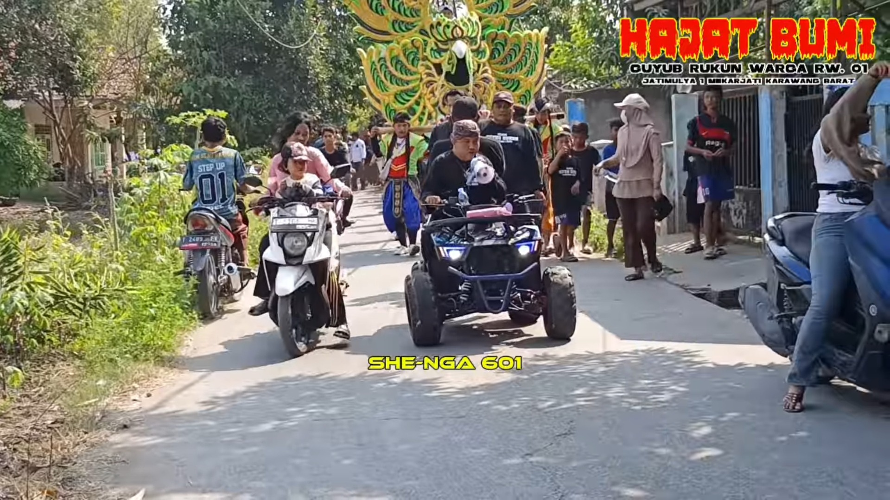
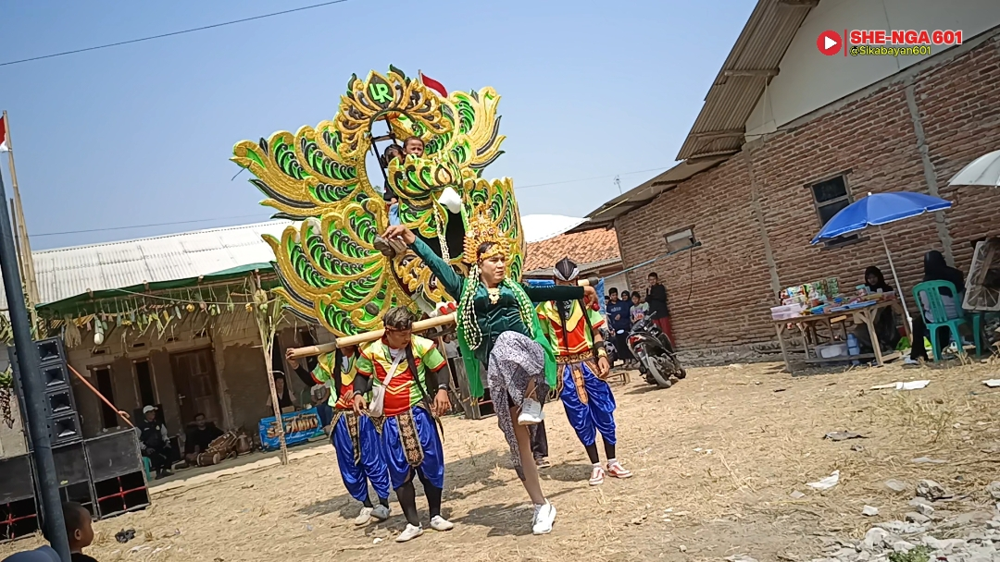
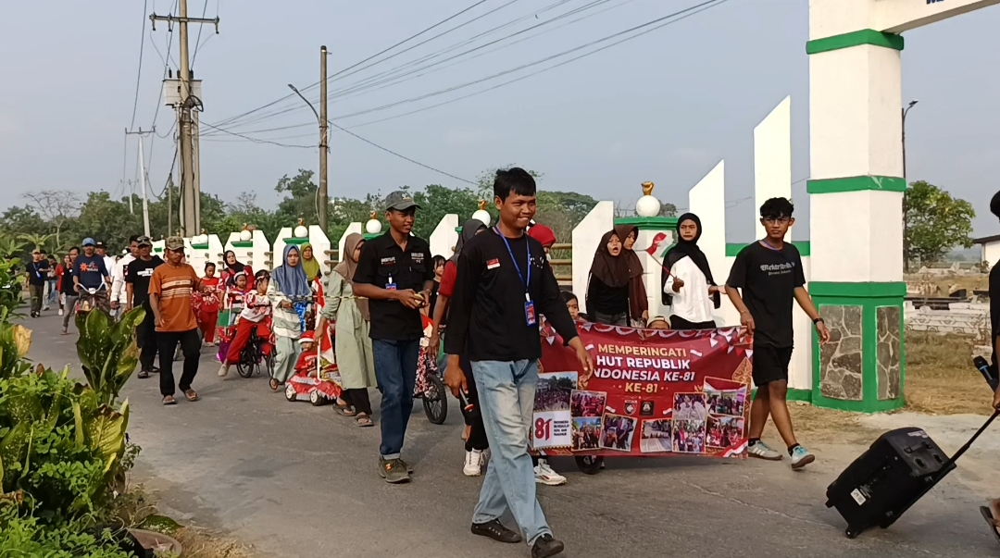

❤️ Selamat Datang di SHE-NGA 601
Cerita dari warga, untuk warga.
Kegiatan Warga
Dokumentasi acara, perlombaan, perayaan, dan kegiatan masyarakat.
Musik & Hiburan
Karaoke, pertunjukan, checksound, dan hiburan lokal.
Seni & Budaya
Mengenalkan kesenian dan kreativitas daerah kepada masyarakat.
📸 Cerita Bergambar
Beberapa momen yang berhasil kami abadikan.

🎉 Hajat Bumi
Kebersamaan warga dalam kegiatan Hajat Bumi.

🎭 Seni & Budaya
Merekam seni dan budaya lokal Jatimulya 1.

🇮🇩 Pawai HUT RI
Semarak warga memeriahkan kemerdekaan Indonesia.
🎬 Video Pilihan SHE-NGA 601
Saksikan dokumentasi kegiatan warga.
🇮🇩 Pawai Sepeda Hias HUT RI ke-81
🎭 Full Bodoran Topeng Pendul
🎤 Lomba Karaoke HUT RI ke-81
📰 Cerita Terbaru
❤️ Dari Warga, Untuk Warga
SHE-NGA 601 hadir untuk merekam cerita-cerita kecil yang memiliki arti bagi masyarakat.
Semoga website ini menjadi ruang untuk mengenalkan kreativitas, seni, budaya, musik, hiburan, dan berbagai kegiatan warga kepada masyarakat yang lebih luas.
📧 Kontak SHE-NGA 601
Silakan hubungi kami untuk informasi, kerja sama, atau kegiatan warga.